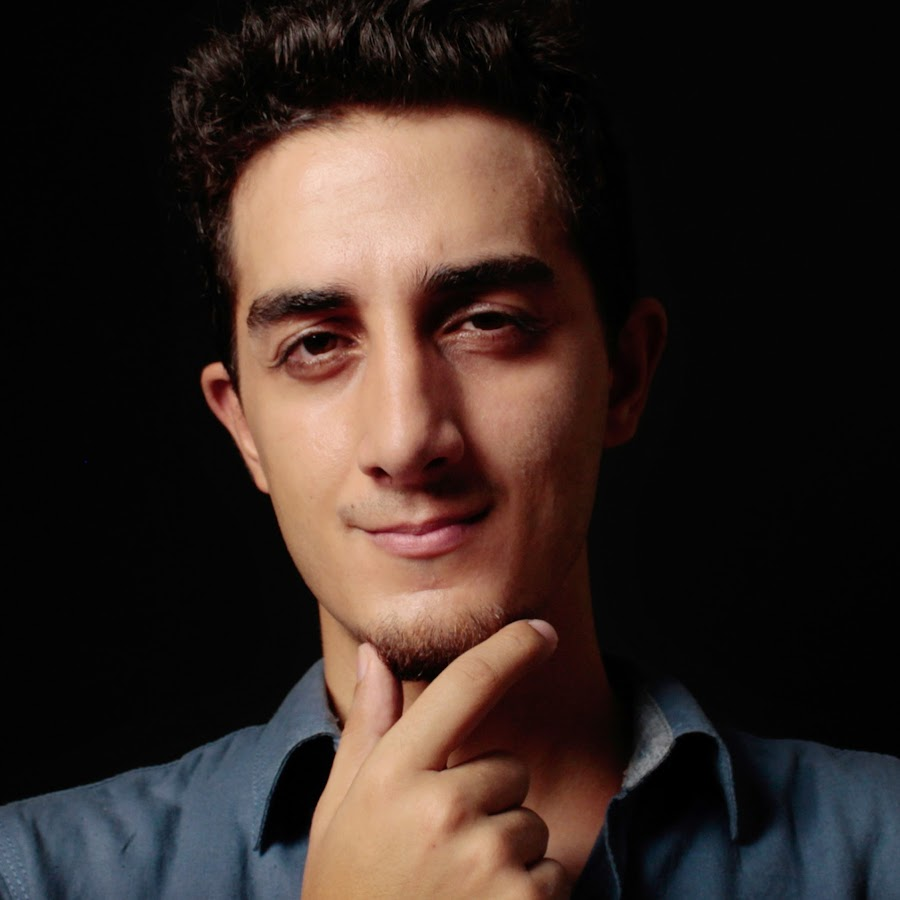

|  |
Ruhi Çenet |
|
Ruhi Çenet, 20 Ekim 1990'da Aydın'da doğdu. Çocukluğunu Manisa ve Bandırma'da geçirdi. Üniversite eğitimini 2007'de gittiği Hindistan'da tamamlayıp 2011 yılında tekrar Türkiye'ye geldi. Türkiye'ye geldikten sonra, "Ruhi Çenet Videoları" adıyla 19 Eylül 2012'de açtığı kanal aracılığıyla YouTube platformu için video içerikleri üretmeye başladı. Kısa zamanda Türkiye'nin en önde gelen YouTuber'larından biri oldu.[2] Bilgilendirici, eğitici ve öğretici türlerinde videolar çekmektedir. Bağımsız bir belgesel yapımcısıdır. Ağustos 2019 tarihinde Cansu Gizem Çenet ile evlendi. Çenet, 2022 Ocak ayı itibarıyla; İngilizce, Almanca, İtalyanca, Fransızca, İspanyolca ve Portekizce dillerinde de yayın yapmaktadır. |